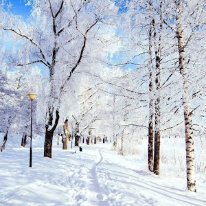
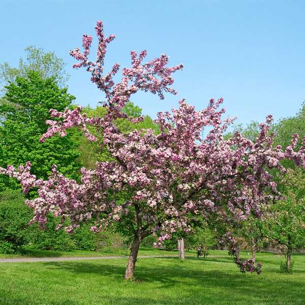
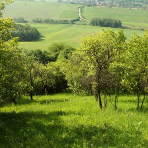
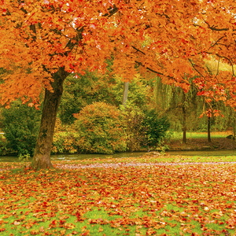

Seasons
Winter
When winter comes, we’re obliged to spend more time indoors because out-of-doors it’s cold. We may get fog, sleet and frost. Ponds, lakes, rivers and streams are frozen, and the roads are sometimes covered with slippery ice or deep snow. The trees are bare. Bitter north winds have stripped them of all their leaves.
Spring
In spring nature awakens from her long winter sleep. The trees are filled with new life, the earth is warmed by the rays of the sun, and the weather gets gradually milder. The fields and meadows are covered with fresh green grass. The sky is blue and cloudless. At night millions of stars shine in the darkness.
Summer
When summer comes the weather gets warmer still and sometimes it’s very hot. It’s the farmer’s busy season: - he works in his field from morning till night. The grass must be cut and the hay must be made, while the dry weather lasts. Sometimes the skies are overcast with heavy clouds. There are storms with thunder, lightning and hail.
Autumn
Autumn brings with it the harvest-time when crops are gathered in and the fruit is picked in the orchards. The days get shorter and the nights longer. The woods turn yellow and brown, leaves begin to fall from the trees, and the ground is covered with them. The skies are grey and very often it rains.